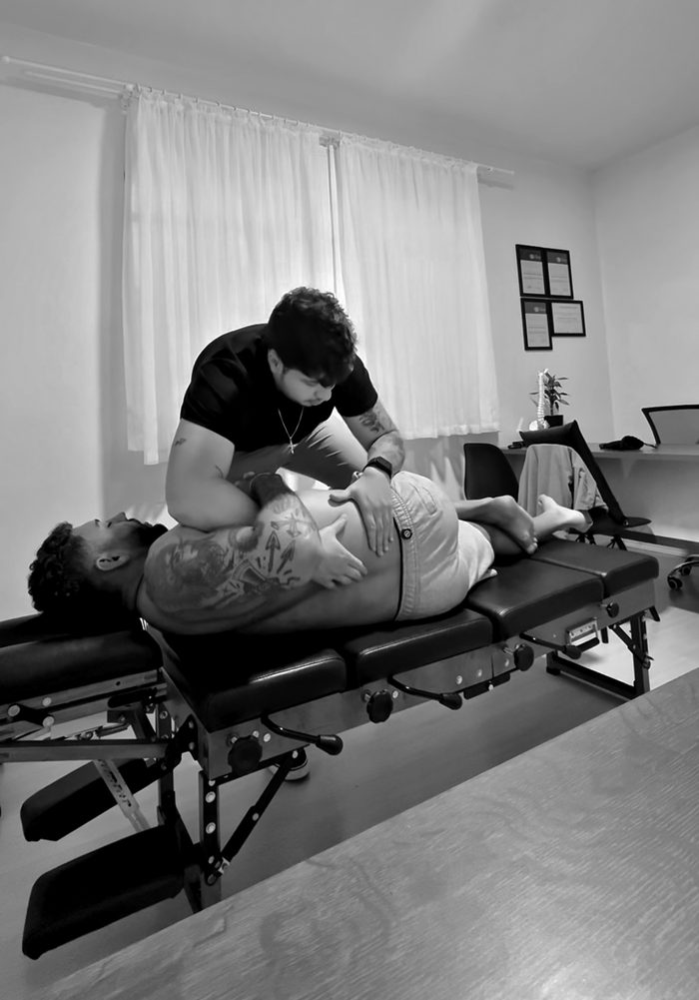

Início / O que trato / Dor lombar e ciático
Dor lombare ciáticoem Guarapuava.
Travou ao levantar, a dor desceu pela perna, saiu torto depois de um jogo de futebol. Antes de escolher a técnica, a avaliação mostra de onde vem a dor e o que ela pede.
- Fisioterapeuta · CREFITO-8 368180-F*
- Quiropraxia
- Sem pedido médico

Coluna lombar · L1 a L5I O que é
A dor que travae a que desce.
Dor lombar é a dor na parte de baixo das costas. Quando ela desce pela perna, às vezes até o pé, costuma ser o nervo ciático irritado: é a ciatalgia, que muita gente chama só de “ciático”.
Na maior parte das vezes não há nada grave por trás. Isso não quer dizer que dá pra tratar no chute: andar inclinado pra um lado (o desvio lateral), a dor que muda com o movimento e o formigamento são pistas que a avaliação usa pra decidir o tratamento.
* Dados que o Rhicardo define antes de publicar. A RK não preenche informação clínica.
II Sinais de alerta
Quando o primeiropasso é o médico.
Dizer quando a quiropraxia não é o começo também faz parte de uma boa avaliação. Se algum destes sinais aparecer, eu encaminho.
- Perda de força nas pernas que vem piorando.
- Dormência na região entre as pernas ou dificuldade nova pra urinar ou evacuar. Nesse caso, pronto atendimento no mesmo dia.
- Dor que começou depois de uma queda ou acidente.
- Febre, perda de peso sem explicação ou histórico de câncer.
- Dor que não alivia em nenhuma posição, nem deitado, e piora à noite.
III Como trato
A técnica sai daavaliação.
Avaliação
Conversa sobre a dor e a rotina, testes neurológicos (força, sensibilidade, reflexos) e testes de movimento pra ver o que alivia e o que piora.
Tratamento
Manipulação articular quando é indicada, movimentos de preferência direcional, terapia manual e exercício. A combinação muda de pessoa pra pessoa.
Em casa
Exercícios e ajustes na rotina pra manter o que melhorou entre uma sessão e outra. A recuperação não para quando a sessão acaba.
IV Na prática
Um caso dedesvio lateral.
Um paciente chegou andando inclinado pra um lado, com dor lombar forte, depois de um movimento no futebol. A avaliação apontou o caminho: manipulação articular e movimentos de preferência direcional. No vídeo, o Rhicardo explica o que foi feito.
Os resultados variam de pessoa para pessoa. * Vídeo com paciente: no site final, só com termo de autorização de imagem (Res. COFFITO 532/2021).
V Perguntas
O que perguntamsobre a lombar.
Quiropraxia ajuda no nervo ciático?
Preciso fazer ressonância antes?
Tenho hérnia de disco. Posso fazer quiropraxia?
Em quantas sessões melhora?
Posso continuar treinando ou jogando?
Texto revisado por Rhicardo Henrick em __/__/2026*. Este conteúdo é informativo e não substitui uma avaliação.
VI Onde atendo
Agende suaavaliação.
Endereço
Policlínica Guairacá
R. Sen. Pinheiro Machado, 571
Alto da XV · Guarapuava, PR
Horário
Segunda a sexta, das 8h às 21h
Com hora marcada
Contato e estrutura
(42) 98836-3200
Estacionamento coberto gratuito
Acesso para cadeira de rodas